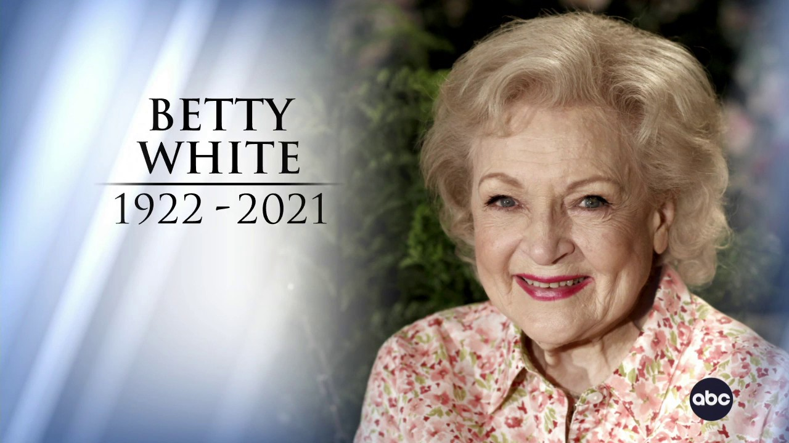

Betty White
America's Grandma

Betty White, an American actress best known
for her comedic work on numerous
television sitcoms, most notably
The Mary Tyler Moore Show and The
Golden Girls.
Here's a time line of Betty White's life:
1922 - was born in Oak Park, Illinois. Betty was the daughter of Horace and Tess, an electrical engineer and a homemaker. She also remained an only child her whole life.1939 - started modeling before she had started acting. She had started modeling and has been taking photos ever since1943 - stared in the film " Time to Kill." Her role was playing Peter's girl. The producer was George Weeves.1953 - launched her first television series, Life with Elizabeth. This was part of a five hour series called Hollywood on Television. This specific show was about a man and his wife!1961 - had been on many game shows and many talk-shows. On the show of Password Betty met her third husband. His name was Allen Ludden. Allen was the love of Betty's life but unforunatly died in 1981.1975 - won her first Emmy award. This award was for Outstanding Supporting Actress in a Comedy Series. At the time Betty was in The Mary Tyler Moore Show.1983 - won her third Emmy award in the year of 1983. She had won it for Outstanding Game Show Host. At that time she was a cast member of Just Men!1987 - won the American Comedy Awards in 1987. She had one it for Funniest Female Performer in a TV Series (Leading Role) Network, Cable or Syndication. She was a cast member forThe Golden Girls at the time.2009 - had stared in the movie named The Proposal. She was the grandma. If I may i think that it was a very good movie since she stared in it, her secnes were the best.2010 - was the oldest person to guest-host on Saterday Night Live. She also recieved the Primtime Emmy Award. This was a very enjoyable life for alot of people.2012 - 90th birthday she was presented on American Idol! NBC had thrown Betty White a happy 90th birthday party. The birthday party was a tribute to America's Golden Girl, for a 90 minute special on channel 3.2021 - tragically passed away. Gone but not forgotten!